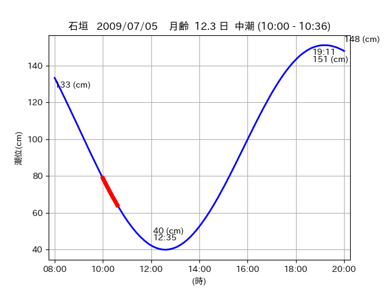
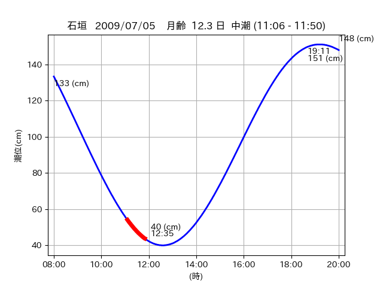
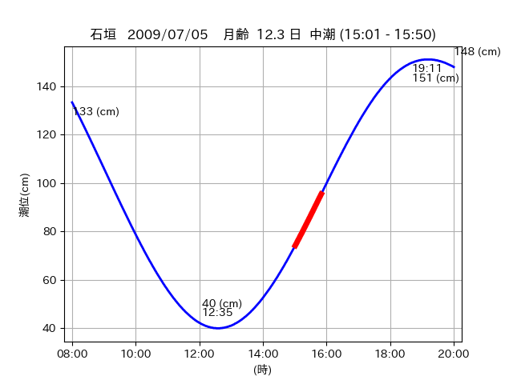

<!DOCTYPE html>
<html>
<head>
    
    <meta http-equiv="content-type" content="text/html; charset=UTF-8" />
    
        <script>
            L_NO_TOUCH = false;
            L_DISABLE_3D = false;
        </script>
    
    <style>html, body {width: 100%;height: 100%;margin: 0;padding: 0;}</style>
    <style>#map {position:absolute;top:0;bottom:0;right:0;left:0;}</style>
    <script src="https://cdn.jsdelivr.net/npm/leaflet@1.9.3/dist/leaflet.js"></script>
    <script src="https://code.jquery.com/jquery-3.7.1.min.js"></script>
    <script src="https://cdn.jsdelivr.net/npm/bootstrap@5.2.2/dist/js/bootstrap.bundle.min.js"></script>
    <script src="https://cdnjs.cloudflare.com/ajax/libs/Leaflet.awesome-markers/2.0.2/leaflet.awesome-markers.js"></script>
    <link rel="stylesheet" href="https://cdn.jsdelivr.net/npm/leaflet@1.9.3/dist/leaflet.css"/>
    <link rel="stylesheet" href="https://cdn.jsdelivr.net/npm/bootstrap@5.2.2/dist/css/bootstrap.min.css"/>
    <link rel="stylesheet" href="https://netdna.bootstrapcdn.com/bootstrap/3.0.0/css/bootstrap-glyphicons.css"/>
    <link rel="stylesheet" href="https://cdn.jsdelivr.net/npm/@fortawesome/fontawesome-free@6.2.0/css/all.min.css"/>
    <link rel="stylesheet" href="https://cdnjs.cloudflare.com/ajax/libs/Leaflet.awesome-markers/2.0.2/leaflet.awesome-markers.css"/>
    <link rel="stylesheet" href="https://cdn.jsdelivr.net/gh/python-visualization/folium/folium/templates/leaflet.awesome.rotate.min.css"/>
    
            <meta name="viewport" content="width=device-width,
                initial-scale=1.0, maximum-scale=1.0, user-scalable=no" />
            <style>
                #map_736d615d98d18ff3423304e0edbe44ee {
                    position: relative;
                    width: 2048.0px;
                    height: 1600.0px;
                    left: 0.0%;
                    top: 0.0%;
                }
                .leaflet-container { font-size: 1rem; }
            </style>
        
</head>
<body>
    
    
            <div class="folium-map" id="map_736d615d98d18ff3423304e0edbe44ee" ></div>
        
</body>
<script>
    
    
            var map_736d615d98d18ff3423304e0edbe44ee = L.map(
                "map_736d615d98d18ff3423304e0edbe44ee",
                {
                    center: [24.382, 123.941],
                    crs: L.CRS.EPSG3857,
                    ...{
  "zoom": 12,
  "zoomControl": true,
  "preferCanvas": false,
}

                }
            );

            

        
    
            var tile_layer_375378826f898b2d10187c66cfa6cb93 = L.tileLayer(
                "https://cyberjapandata.gsi.go.jp/xyz/seamlessphoto/{z}/{x}/{y}.jpg",
                {
  "minZoom": 0,
  "maxZoom": 18,
  "maxNativeZoom": 18,
  "noWrap": false,
  "attribution": "\u5730\u7406\u9662\u5730\u56f3",
  "subdomains": "abc",
  "detectRetina": false,
  "tms": false,
  "opacity": 1,
}

            );
        
    
            tile_layer_375378826f898b2d10187c66cfa6cb93.addTo(map_736d615d98d18ff3423304e0edbe44ee);
        
    
            var marker_94573de983d91c2d497e2df66a31efba = L.marker(
                [24.3725, 123.9506],
                {
}
            ).addTo(map_736d615d98d18ff3423304e0edbe44ee);
        
    
            var icon_fb039043f4673e576a8b93fbc27f635e = L.AwesomeMarkers.icon(
                {
  "markerColor": "orange",
  "iconColor": "white",
  "icon": "info-sign",
  "prefix": "glyphicon",
  "extraClasses": "fa-rotate-0",
}
            );
        
    
        var popup_c0cc0395c8ed7b96883d6a1138f5dc2b = L.popup({
  "maxWidth": "100%",
});

        
            
                var html_f7fb13c89ae6ab99a2343b90ef4da7fd = $(`<div id="html_f7fb13c89ae6ab99a2343b90ef4da7fd" style="width: 100.0%; height: 100.0%;"><table><tr><td></td></tr><tr><td><center>20090705 No.1 </center></table></td></tr></table</div>`)[0];
                popup_c0cc0395c8ed7b96883d6a1138f5dc2b.setContent(html_f7fb13c89ae6ab99a2343b90ef4da7fd);
            
        

        marker_94573de983d91c2d497e2df66a31efba.bindPopup(popup_c0cc0395c8ed7b96883d6a1138f5dc2b)
        ;

        
    
    
                marker_94573de983d91c2d497e2df66a31efba.setIcon(icon_fb039043f4673e576a8b93fbc27f635e);
            
    
            var poly_line_52aca3a964f9a9029b1e978c860c865e = L.polyline(
                [[24.3725, 123.9506], [24.3717, 123.9537]],
                {"bubblingMouseEvents": true, "color": "#00FFFF", "dashArray": null, "dashOffset": null, "fill": false, "fillColor": "#00FFFF", "fillOpacity": 0.2, "fillRule": "evenodd", "lineCap": "round", "lineJoin": "round", "noClip": false, "opacity": 1.0, "smoothFactor": 1.0, "stroke": true, "weight": 3}
            ).addTo(map_736d615d98d18ff3423304e0edbe44ee);
        
    
            var marker_fc65170381ecc17eaa70bcd736dec9be = L.marker(
                [24.3694, 123.9605],
                {
}
            ).addTo(map_736d615d98d18ff3423304e0edbe44ee);
        
    
            var icon_26bdb662e08a558ed4fdb531e3cb5db1 = L.AwesomeMarkers.icon(
                {
  "markerColor": "orange",
  "iconColor": "white",
  "icon": "info-sign",
  "prefix": "glyphicon",
  "extraClasses": "fa-rotate-0",
}
            );
        
    
        var popup_c1ed675daea1aec56350e887b6f289f8 = L.popup({
  "maxWidth": "100%",
});

        
            
                var html_16b7f8c1b7b950d9c381bd7340f2d424 = $(`<div id="html_16b7f8c1b7b950d9c381bd7340f2d424" style="width: 100.0%; height: 100.0%;"><table><tr><td></td></tr><tr><td><center>20090705 No.2 </center></table></td></tr></table</div>`)[0];
                popup_c1ed675daea1aec56350e887b6f289f8.setContent(html_16b7f8c1b7b950d9c381bd7340f2d424);
            
        

        marker_fc65170381ecc17eaa70bcd736dec9be.bindPopup(popup_c1ed675daea1aec56350e887b6f289f8)
        ;

        
    
    
                marker_fc65170381ecc17eaa70bcd736dec9be.setIcon(icon_26bdb662e08a558ed4fdb531e3cb5db1);
            
    
            var poly_line_c60b3a118155db383686327c5a2db395 = L.polyline(
                [[24.3694, 123.9605], [24.3674, 123.9547]],
                {"bubblingMouseEvents": true, "color": "#00FFFF", "dashArray": null, "dashOffset": null, "fill": false, "fillColor": "#00FFFF", "fillOpacity": 0.2, "fillRule": "evenodd", "lineCap": "round", "lineJoin": "round", "noClip": false, "opacity": 1.0, "smoothFactor": 1.0, "stroke": true, "weight": 3}
            ).addTo(map_736d615d98d18ff3423304e0edbe44ee);
        
    
            var marker_3f022f6e286605597e464179e15e96c3 = L.marker(
                [24.3802, 123.943],
                {
}
            ).addTo(map_736d615d98d18ff3423304e0edbe44ee);
        
    
            var icon_6fcd07dd8f8a51cd486322913b5fc198 = L.AwesomeMarkers.icon(
                {
  "markerColor": "orange",
  "iconColor": "white",
  "icon": "info-sign",
  "prefix": "glyphicon",
  "extraClasses": "fa-rotate-0",
}
            );
        
    
        var popup_811de74c85dec2775c00feb18239ddbe = L.popup({
  "maxWidth": "100%",
});

        
            
                var html_427df6874e63062f25c4cb97ba6e38f7 = $(`<div id="html_427df6874e63062f25c4cb97ba6e38f7" style="width: 100.0%; height: 100.0%;"><table><tr><td></td></tr><tr><td><center>20090705 No.3 </center></table></td></tr></table</div>`)[0];
                popup_811de74c85dec2775c00feb18239ddbe.setContent(html_427df6874e63062f25c4cb97ba6e38f7);
            
        

        marker_3f022f6e286605597e464179e15e96c3.bindPopup(popup_811de74c85dec2775c00feb18239ddbe)
        ;

        
    
    
                marker_3f022f6e286605597e464179e15e96c3.setIcon(icon_6fcd07dd8f8a51cd486322913b5fc198);
            
    
            var poly_line_cbd30e0cdcf9f3af1f83d41667cb8431 = L.polyline(
                [[24.3802, 123.943], [24.3829, 123.9395]],
                {"bubblingMouseEvents": true, "color": "#FF00FF", "dashArray": null, "dashOffset": null, "fill": false, "fillColor": "#FF00FF", "fillOpacity": 0.2, "fillRule": "evenodd", "lineCap": "round", "lineJoin": "round", "noClip": false, "opacity": 1.0, "smoothFactor": 1.0, "stroke": true, "weight": 3}
            ).addTo(map_736d615d98d18ff3423304e0edbe44ee);
        
</script>
</html>